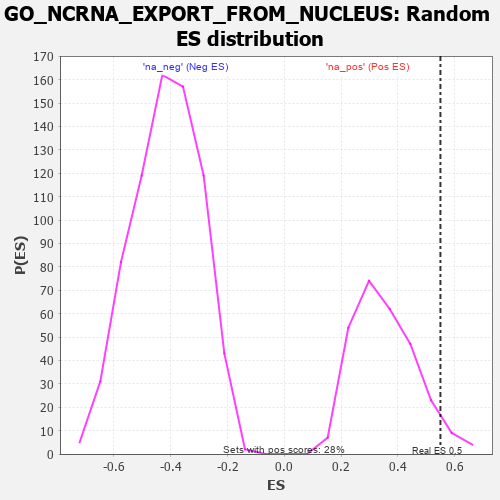

| | | Dataset | 7d |
| Phenotype | NoPhenotypeAvailable |
| Upregulated in class | na_pos |
| GeneSet | GO_NCRNA_EXPORT_FROM_NUCLEUS |
| Enrichment Score (ES) | 0.549403 |
| Normalized Enrichment Score (NES) | 1.557009 |
| Nominal p-value | 0.046428572 |
| FDR q-value | 0.2566228 |
| FWER p-Value | 1.0 |
Table: GSEA Results Summary
 Fig 1: Enrichment plot: GO_NCRNA_EXPORT_FROM_NUCLEUS
Fig 1: Enrichment plot: GO_NCRNA_EXPORT_FROM_NUCLEUS
Profile of the Running ES Score & Positions of GeneSet Members on the Rank Ordered List
| PROBE | GENE SYMBOL | GENE_TITLE | RANK IN GENE LIST | RANK METRIC SCORE | RUNNING ES | CORE ENRICHMENT | | 1 | NUP85 | | | 329 | 0.772 | 0.0668 | Yes |
| 2 | XPOT | | | 441 | 0.665 | 0.1460 | Yes |
| 3 | NUP54 | | | 505 | 0.627 | 0.2259 | Yes |
| 4 | RAE1 | | | 827 | 0.524 | 0.2590 | Yes |
| 5 | NOL6 | | | 870 | 0.514 | 0.3256 | Yes |
| 6 | PHAX | | | 1089 | 0.466 | 0.3635 | Yes |
| 7 | NUP93 | | | 1127 | 0.459 | 0.4231 | Yes |
| 8 | NUP43 | | | 1160 | 0.453 | 0.4825 | Yes |
| 9 | NUP88 | | | 1429 | 0.404 | 0.5054 | Yes |
| 10 | NUP58 | | | 1787 | 0.340 | 0.5081 | Yes |
| 11 | NUP62 | | | 1871 | 0.324 | 0.5430 | Yes |
| 12 | SEC13 | | | 2330 | 0.256 | 0.5212 | Yes |
| 13 | NCBP2 | | | 2383 | 0.248 | 0.5494 | Yes |
| 14 | NUP50 | | | 2625 | 0.209 | 0.5484 | No |
| 15 | NUP98 | | | 3261 | 0.112 | 0.4842 | No |
| 16 | RAN | | | 4299 | -0.059 | 0.3622 | No |
| 17 | TPR | | | 6597 | -0.709 | 0.1727 | No |
Table: GSEA details [plain text format]

Fig 2: GO_NCRNA_EXPORT_FROM_NUCLEUS: Random ES distribution
Gene set null distribution of ES for GO_NCRNA_EXPORT_FROM_NUCLEUS